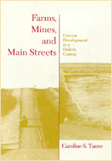

An ethnographic study of the uneasy partnership between a community and corporate industry
An ethnographic study of the uneasy partnership between a community and corporate industry


 An ethnographic study of the uneasy partnership between a community and corporate industry
An ethnographic study of the uneasy partnership between a community and corporate industry

|  |
Farms, Mines, and Main StreetsUneven Development in a Dakota CountyCaroline S. Tauxecloth EAN: 978-1-56639-070-5 (ISBN: 1-56639-070-2) |
Links between the global and the local economy secure the chain of events in this ethnographic study of Mercer County, North Dakota, an agricultural and mining district that embraced "progress" when faced with economic decline.
Caroline S. Tauxe explores social, political, and economic transformations—and tradeoffs—that occurred during an industrial boom and its aftermath between 1978 and 1991. Although they gained new businesses, increased population, and a modernized infrastructure, Mercer County residents relinquished local control and autonomy.
Maps
Acknowledgments
1. Linking the Global and the Local
2. A Century of Transformation
3. Currents in Political Culture
4. Lowering the Energy Boom
5. The Politics of Planning
6. Living with Development
7. Patterns of Power: Changes in Political Economy
8. The Price of Progress
Notes
Bibliography
Index
Caroline S. Tauxe is a visiting scholar in the Department of Anthropology at Cornell University.
Conflicts in Urban and Regional Development, edited by John R. Logan and Todd Swanstrom.
Conflicts in Urban and Regional Development, edited by John R. Logan and Todd Swanstrom, includes books on urban policy and issues of city and regional planning, accounts of the political economy of individual cities, and books that compare policies across cities and countries.
© 2015 Temple University. All Rights Reserved. This page: http://www.temple.edu/tempress/titles/962_reg.html.